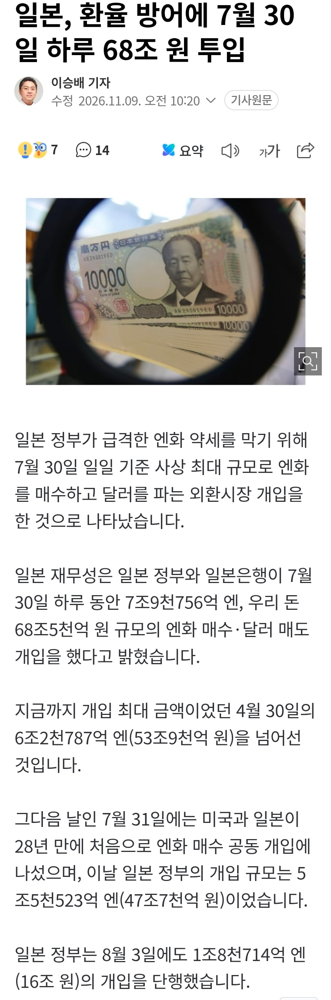

일본, 환율 방어에 7월 30일 하루 68조 원 투입
댓글
기사 제목 긁어왔을 뿐인데ㅋㅋ
렉카한테 너무 가혹한거 아니냐고
제목 바꿈 제목 바꿔치기에 당했네
어떤 어그로에 끌리셨죠?
원래 제목에 일본이란말이없었음
탱킹대성공
비추해도 개드립갔죠?
근데 방어 안됐죠?
이게 한거야..
일본살고있는데 걍 700대 한번 찍어야할듯함.
한국은 반도체호재로 꾸준한데 일본은 다카이치가 갈수록 말아먹는 느낌이 씨게와서....
수출기업만 입이고 나머지는 아가리임 ㅋㅋㅋ
안데… 죽어 죽는다구….
안돼 내 계좌가 녹는다고
500대찍으면어캐댐
후쿠오카 한달에 한번가야지 그럼
그냥 금리를 올려라
BOJ가 금리올리고 있우
문제는
지금 일본 1년 예산의 20% 이상이 국고채원금+이자 상환에 사용중이라
일본도 부채가 많아서 금리 막 못올릴걸 뭣보다 제로금리 존나게 오래 한나라라서 갑작스럽게 금리 확 올리면 디플레 올거임
일본은 금리올리면 뒤져
뭐 한국도 그렇겠지만
하루에 68조원을 태우는 기분은 어떨까
엔화는 일본정부가 컨트롤 가능한가
얘네 금리 올리면 올라가긴 할껄
올리기엔 일본 가계대출 때문에 서민경제 박살남
보유한 미국 국채 다 던져버린다고 협박하면
미국이 도와줄듯
도와줬음... 도와는 줬음.
베센트가 도와는 줬긴한데
노머고가 계속 미국 내 투자 외치고
이란 전쟁 못 끝내면 엔화 원화는 힘들 듯
대미 투자 관련해서 민주당이 조질려고 준비중이더라. 그외 관세 등등해서.. 여튼 그건 어떻게 해소가 될것 같음. 여튼 우리는 달러 역대급으로 빨아들이고 있으니깐. 일본은 좀 이야기가 다름. 지금 달러/엔화가 160 근방에서 깔짝이고 있음. 대놓고도 했지만 조금씩이나마 계속 관여하는거 같음. 160 터치만은 막을려고 안간힘을 쓰는거 같은데.. 좋은 소식이 일본엔 없음. 처방은 금리인상이지만 그랬다가는 빚이 감당 못할만큼 올라갈테니깐. 이래저래 미국 금리 인하까지 일본은 있는거 써가면서 열심히 버틸것 같음.
ㄹㅇ
일본 베이부머들의 은퇴로 노동인구 감소
국고채 매입하던 연기금들이 연금 지급을 위해
국고채 매각시작
국고채 원금,이자 상환을 위해
정부예산의 20%를 사용중
악재가 너무 겹친듯
우리나라도 10년 안으로 똑같은 상황을 만날텐데 어떻게되려나
840밑으로 엔화 지를려고 대기중인데 어쩐지 계속 안떨어지드라..
저거 몇달전 얘기임
그 후로 엔-달러 환율은 큰 변동 없는거 보면 지금은 그냥 원화가 오른거
반다이 시발아
요즘에는 환율글 덜 올라오네
6개월 전만해도 매일 환율가지고 나라 망하네 마네
국격이 어쩌내 하면서 재밌었는데
10원 단위로 개드립가는 치트키였음 ㅋㅋ
7월 163, 오늘 158.
3%뿐이 차이 안나서 크게 돈을 잃지는 않았을듯.
주식고점때 왜 국장비율 안늘리냐고 정치인들이 지랄 염병을 해서 돈 다 쳐바르고
지금 하방 쳐박을 돈도 없는 개 병신같은 운용을 하는 나라도 있어요.
기사 보면서 나 코흘리게 시절엔 500엔 = 5,000원 으로 계산했는데
이젠 환율이 달라졌다는게 놀랍네
어그로 제목 비추